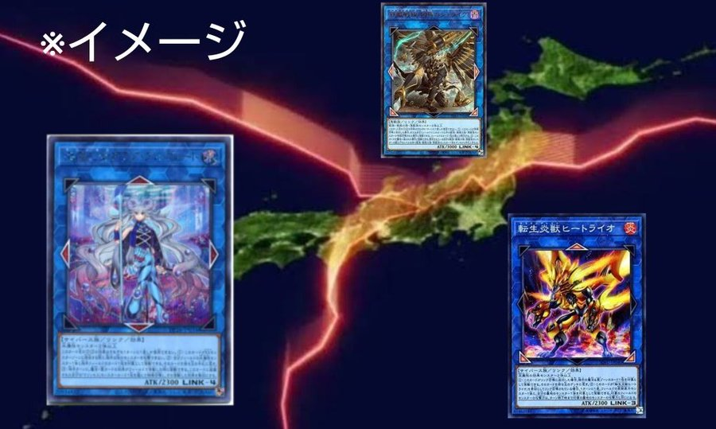

一章 今回の環境デッキ
デュエルリンクスで遊戯王VRAINS実装などでリンク召喚が盛り上がっている中で開催されたリンクフェス。
レンタルデッキがないことやランクマ風の流れという今までと違ったテイストだが、30戦以上行って一度もポイント
稼ぎの自爆デッキやbotと遭遇することはなかったがtwitterのTL見る限りではチラホラまだいたらしく、自分の場合割と奇跡的だったのかもしれない
環境デッキ
今回のフェスはリンクフェスゆえに「リンク召喚」オンリーのイベントだが、リンク召喚は
リンク召喚をしてから更に融合やエクシーズなどにつなぐことが主流になりつつあるデッキが多い為かデッキは大まかに
「転生炎獣」
「マリンセス」
「鉄獣戦線」とリンク召喚だけでも戦えるデッキの三つが多かったように思える。

中でもマリンセスの使用率は圧倒的と言ってもよく、３回に一回くらいの確率で必ず 「マリンセス」に当たった。
酷い時は三回連続でぶち当たった。もはや 「マリンセス」のバーゲンセール状態
このデッキの強みは少ない初動で展開ルートが豊富かつ、うらら一発撃ったくらいでは止まらない程の連続でリンク召喚を行いリンク４の「グレートバブルリーフ」や「アクアアルゴノート」
につなげていくのが主流であった。
専用フィールド魔法 「海晶乙女の闘海」はリンク召喚したマリンセスリンクモンスターに墓地のリンクモンスターを装備させ、打点を強化する効果。
さらに「クリスタルハート」を装備していれば、効果の一切を受け付けなくなる耐性を付与させる効果もある。
高打点モンスターに完全耐性がつくだけでも厄介だったが「アルゴノート」や「ワンダーハート」
には装備カードを特殊召喚して相手の展開を制限する効果もあるため
生半可な展開では突破は非常に難しかった。
もっとも、対策の手段がないわけでなく耐性は「海晶乙女の闘海」による外付けであるため
「海晶乙女の闘海」を除去できれば一気に形成は逆転する。その際にも魔法罠を妨害する「アルゴノート」
の存在が脅威となるが、モンスター効果への耐性はないので「アクセスコードトーカー」「ヴァレルソードドラゴン」などで対抗していった。
いっそのこと展開させない前提で「二ビル」を直接ぶちこむ。
「増殖するG」は非常に有効的だった。
ここまでマリンセス祭りであればうららを抜いてでもマリンセス対策に全神経を集中させておいたが、非常に効率は良かったように思える。
稀少種
ある意味個人的にフェスの醍醐味と思っているのがルールの穴をついたような召喚方法を奨励するフェスでありながらその召喚方法を使わないデッキの存在だ。
今回も地獄のようなマリンセス祭りの中にも、リンクモンスター以外のエクストラデッキを使用しない変わり種のような面白いデッキが出てくるのを楽しみにしていた
特に面白かったのは
「ワイト」デッキだ。
「ワイト」デッキは、「ワイト」カードを墓地にためることで「ワイトキング」の攻撃力を高めて殴ることが主軸のデッキ。
ワイト与するアンデッド族は墓地肥やし手段が豊富かつ、エクストラデッキへの依存度も低いが積極的にモンスターを墓地へ送れるリンク召喚との相性も良いため、決まりさえすれば完全耐性を持とうが、デュエルリンクスのスタミナを
使い切るほど長時間展開しようが攻撃力12000の「ワイトキング」で殴ってしまえば関係はない。
まさに力こそパワー
使用デッキ
今回自分が採用したのは
「エンディミオン」デッキだ。
こちらもまた、メインの召喚方法を使わずとも戦える抜け穴デッキといえる。
デッキ構成を見ていく。
抜け穴を事前に察知されていたか「魔力統括」が三積み出来なかった開幕から出鼻を挫かれたが、
代わりに「トゥーンのもくじ」を採用
若干手札事故の要素を抱えているが、もくじ⇒もくじ⇒もくじ⇒ワールドでデッキ圧縮と魔力カウンターを加速させることが出来るため
非常に重宝した。
この「エンディミオン」デッキは魔力カウンターをためて強力な効果を発揮することがテーマのデッキ
発動さえできれば非常に協力ではあるが逆に言えば、魔力カウンターをためることができなければ無力にも等しいデッキでもあるので
「成金ゴブリン」「チキンレース」などの使った瞬間に次につなげられる魔法カードを多めに採用した
なお「強欲で貪欲な壺」は個人的に全くいい思い出がないので採用は見送った。
リザルト
.png)
.png)
.png)
４０戦戦って２５勝１５敗
勝率６割弱のまずまずな結果だったと言える。
個人的なMVPとしては自分フィールドに存在する魔力カウンターであればどこでも使えるというエンディミオンカードにはない性能、このデッキでは余りやすい召喚権を惜しみなく使うことが出来、
デッキから「魔導獣マスターケルベロス」か「魔導獣キングジャッカル」を呼べる
「魔導獣ジャッカル」に軍配が上がった。
次点の「サーヴァントオブエンディミオン」のサーチ効果は強力だが、やはり魔力カウンターを三つためる必要があるのと「うらら」を打たれたら悲惨なことに
なった展開も少なくはなかった
「魔導研究所」のたった一個の魔力カウンターでサーチできるという、回収しやすいのも非常にありがたく、手札が芳しくない時でもこのカードでキングジャッカルを
一先ず立てておけるという布陣を作れた功績は大きい
魔力カウンターを三つ使って魔力カウンターを置けるモンスターをどれでも相手ターンのみだがデッキから特殊召喚出来る隠れた効果。
本来の仕事をする機会が余り多くなかった「マギステルオブエンディミオン」に授与したい。
エクストラデッキはいじっていないので省いているが、３６戦目より上述したがあまりにもマリンセスだらけである環境に文字通りの一石を投じるための二ビルを採用
フェスで大量にジェムもポイントも手に入ったので入手するのは容易かった
また、手札を円滑に勧めるために魔導書セットを投入。要所要所でデッキから二枚ドローは役に立ってくれた
最後に
今回ランクマ風の流れには賛否が分かれるところだったように思うが、個人的にもやはりランクマやっているのと感覚が変わらなくなるので従来通りの流れが良かったのではないかという気はする
召喚方法フェスはあらかたやりつくしたので今後、どんなフェスが開催されるようになるか、そしてどのような衝撃的な展開が起こるか個人的にも楽しみにしていきたいところだ。